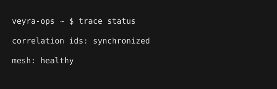

Migrating our us-east staging mesh over to the new zero-trust ingress routers today. Let's see if the latency metrics hold up under peak load.
@ethancole_ops7
Staff Infrastructure & SRE Architect @ Veyra Cloud Solutions (CTF Persona). Focused on edge compute meshes, distributed tracing, and cluster resilience. All thoughts strictly corporate.
Migrating our us-east staging mesh over to the new zero-trust ingress routers today. Let's see if the latency metrics hold up under peak load.
Shoutout to the Veyra telemetry team for keeping correlation IDs unified across all microservice layers. Makes incident tracing actually bearable.

Late night maintenance window on the internal invoice dispatchers. Coffee is the only runtime dependency that matters.